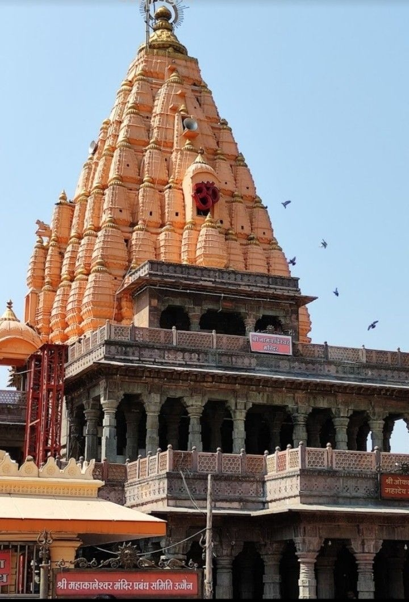

Most visitors come for Mahakal and leave the next morning. That is a shame — a few of the city's other temples are genuinely unusual, and several are ten minutes apart.
Ujjain is one of the seven Sapta Puri, the holy cities of Hinduism, and one of the four that host the Kumbh Mela. Almost everything below sits within a short auto ride of the others, so two unhurried days covers the lot.
The reason you came. One of the twelve Jyotirlingas, and the only one where Shiva is worshipped as Mahakal, the lord of time. The pre-dawn Bhasma Aarti is its most famous ritual — it needs a pass booked in advance, which we've covered in the Bhasma Aarti guide.
The corridor built alongside the temple, lined with sculpted panels and statues telling stories from Shiva's mythology. It is long, open and best walked slowly — early morning or after sunset, when the lighting does the work and the stone isn't hot underfoot.
The one visitors remember. Dedicated to Kal Bhairav, the fierce guardian form of Shiva, and the temple where liquor is offered to the deity as prasad — poured, and visibly accepted. Whatever you make of it, it is unlike any other temple you will visit.
Usually open from early morning to evening, with no entry charge.
Regarded as the birthplace of Mangal (Mars), which makes it one of the most important temples in the country for anyone dealing with Mangal Dosh in their chart. Pilgrims come specifically for the Bhaat Puja here. It sits above the Kshipra, and the view is worth the trip on its own.
A Shakti Peeth, rebuilt in the Maratha period, known for the two tall stone lamp-towers in its courtyard — hundreds of oil lamps lit together during Navratri, which is a remarkable thing to stand in front of.
The oldest bathing ghat on the Kshipra, and the centre of the Simhastha Kumbh Mela when it comes to Ujjain every twelve years. On an ordinary evening it is simply a good place to sit and watch the aarti and the river. Open all hours.
Where, by tradition, Krishna, Balaram and Sudama studied under Guru Sandipani. A quiet, small, unshowy place — more affecting for it. Usually open through the day, no entry charge.
Ujjain was the reference meridian of classical Indian astronomy — the place longitude was measured from, centuries before Greenwich. The observatory here was built by Sawai Jai Singh II in 1725 and still holds its masonry instruments, several of which remain in working use for calculating the local almanac.
A good stop if you have children with you, or if you want an hour of Ujjain that isn't a queue.
Timings and entry charges change, especially around festivals, Navratri and Simhastha years. Everything above is offered to help you plan the shape of a day — check the current timings locally before setting out. Ask us and we'll tell you what's true this week.
Getting between them: most of these are short auto or Rapido rides from one another. Rapido is usually quickest for a single traveller; for a family, ask us and we'll help you arrange a car for the day rather than paying four separate fares.
Five furnished flats with kitchens, a short drive from the temple — and a caretaker who can tell you what's open today.